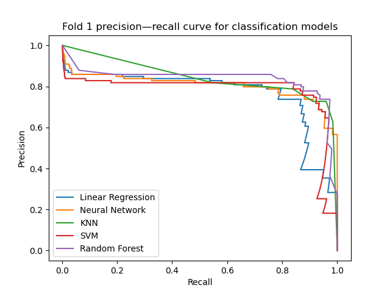
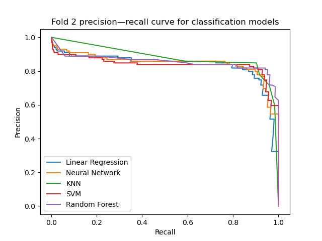
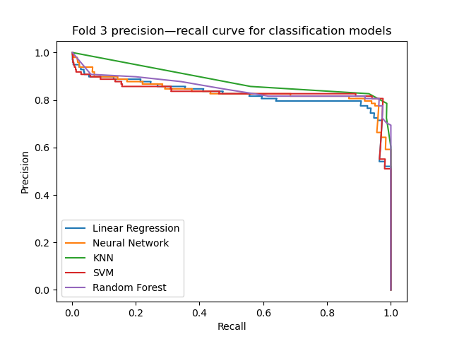
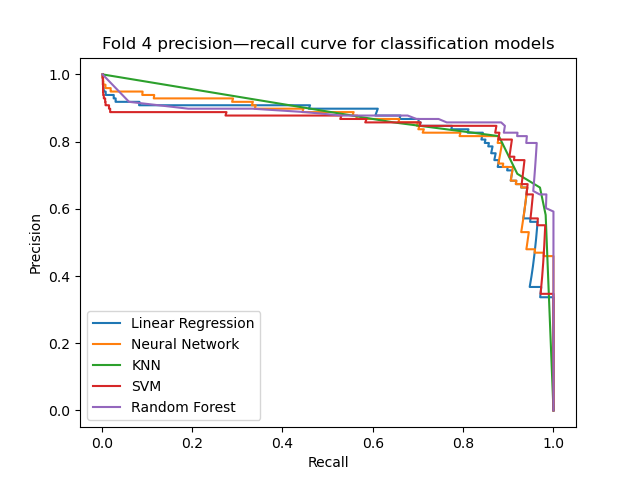
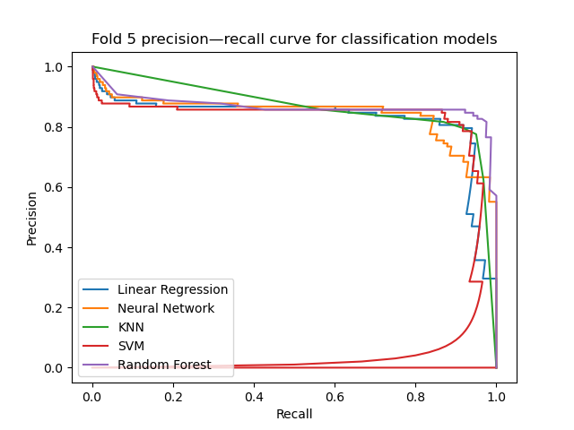

Ensembles
In the previous sections we've developed several models which all perform reasonably well.
import matplotlib.pyplot as plt
from sklearn.linear_model import LinearRegression
from sklearn.neighbors import KNeighborsClassifier
from sklearn.neural_network import MLPClassifier
from sklearn.ensemble import RandomForestClassifier
from sklearn.naive_bayes import GaussianNB
from sklearn.svm import SVC
from sklearn.model_selection import StratifiedKFold
from sklearn.preprocessing import StandardScaler, PolynomialFeatures
from sklearn.pipeline import Pipeline
from sklearn.metrics import average_precision_score, precision_recall_curve
from os import path
from util import load_data, get_confidence, BOOK_PATH
linear_pipeline = Pipeline([
('poly', PolynomialFeatures(degree=2, interaction_only=True, include_bias=False)),
('scaler', StandardScaler()),
('clf', LinearRegression())
])
nn_pipeline = Pipeline([
('scaler', StandardScaler()),
('clf', MLPClassifier(hidden_layer_sizes=(10,), alpha=0.001, random_state=2))
])
knn_pipeline = Pipeline([
('scaler', StandardScaler()),
('clf', KNeighborsClassifier())
])
svm_pipeline = Pipeline([
('scaler', StandardScaler()),
('clf', SVC())
])
classifiers = [
('Linear Regression', linear_pipeline),
('Neural Network', nn_pipeline),
('KNN', knn_pipeline),
('SVM', svm_pipeline),
('Random Forest', RandomForestClassifier(n_jobs=-1, random_state=0))
]
X, y = load_data()
k_fold = StratifiedKFold(n_splits=5, shuffle=True, random_state=0)
print(' Average precision score ')
print('-------------------------------------')
print('Fold Classifier Score')
for i, (train_index, test_index) in enumerate(k_fold.split(X, y)):
X_train, X_test = X.iloc[train_index, :], X.iloc[test_index, :]
y_train, y_test = y[train_index], y[test_index]
plt.figure()
for name, classifier in classifiers:
classifier.fit(X_train, y_train)
y_score = get_confidence(classifier, X_test)
print(f'{i + 1:<6} {name:<24} {average_precision_score(y_test, y_score):.3f}')
curve = precision_recall_curve(y_test, y_score)
plt.plot(curve[0], curve[1], label=name)
plt.legend(loc='lower left')
plt.title(f'Fold {i + 1} precision—recall curve for classification models')
plt.xlabel('Recall')
plt.ylabel('Precision')
plt.savefig(path.join(BOOK_PATH, 'images', f'final_fold{i + 1}.png'))
print()
    
All of these models are broadly comparable. The random forest still proves hard to beat, but generally the models all perform broadly equivalently.
We might now consider what's going wrong with these classifiers: which transactions cause problems? If they all fail on the same transactions, this might just mean they're difficult to learn. If not, we might be able to combine the learners into one which is more powerful than any individual classifier.
Errors
We investigate the idea we just mentioned: do the classifiers tend to predict the label incorrectly on the same transactions?
import numpy as np
import matplotlib.pyplot as plt
from sklearn.linear_model import LinearRegression
from sklearn.neighbors import KNeighborsClassifier
from sklearn.neural_network import MLPClassifier
from sklearn.ensemble import RandomForestClassifier
from sklearn.svm import SVC
from sklearn.model_selection import StratifiedKFold
from sklearn.preprocessing import StandardScaler, PolynomialFeatures
from sklearn.pipeline import Pipeline
from sklearn.metrics import precision_recall_curve, accuracy_score
from util import load_data, get_confidence
import itertools
# We create popelines from the various successful models we've developed.
linear_pipeline = Pipeline([
('poly', PolynomialFeatures(degree=2, interaction_only=True, include_bias=False)),
('scaler', StandardScaler()),
('clf', LinearRegression())
])
nn_pipeline = Pipeline([
('scaler', StandardScaler()),
('clf', MLPClassifier(hidden_layer_sizes=(10,), alpha=0.001, random_state=2))
])
knn_pipeline = Pipeline([
('scaler', StandardScaler()),
('clf', KNeighborsClassifier())
])
svm_pipeline = Pipeline([
('scaler', StandardScaler()),
('clf', SVC())
])
classifiers = [
('Linear Regression', linear_pipeline),
('Neural Network', nn_pipeline),
('KNN', knn_pipeline),
('SVM', svm_pipeline),
('Random Forest', RandomForestClassifier(n_jobs=-1, random_state=0))
]
def find_best_threshold(y_true, y_score):
curve = precision_recall_curve(y_true, y_score)
thresholds = curve[2]
accuracy = []
for threshold in thresholds:
accuracy.append(accuracy_score(y_true, y_score > threshold))
return thresholds[np.argmax(accuracy)]
X, y = load_data()
# We will collect the indices of the misclassified transactions (in fold 1) in
# misclassified. We then plot a histogram which shows us how many times each transaction
# was misclassified. We test using 5 classification pipelines, so if a transaction has
# been misclassified by all 5, it will show as a bar of 5.
misclassified = []
k_fold = StratifiedKFold(n_splits=5, shuffle=True, random_state=0)
for i, (train_index, test_index) in enumerate(k_fold.split(X, y)):
# Only evaluate the first fold for brevity.
if i > 0:
break
X_train, X_test = X.iloc[train_index, :], X.iloc[test_index, :]
y_train, y_test = y[train_index], y[test_index]
for name, clf in classifiers:
clf.fit(X_train, y_train)
y_score = get_confidence(clf, X_test)
# We want to test each classifier on its most accurate threshold.
threshold = find_best_threshold(y_test, y_score)
# Creates a numpy array that is 1 if the corresponding transaction
# was correctly classified by clf.
classified_correctly = (y_score > threshold) == y_test
# Find the indices of the misclassifications and append to the collection
# misclassified.
misclassifications = list(np.where(classified_correctly == 0)[0])
misclassified.append(misclassifications)
# misclassified contains 5 lists: one from each classifier. We flatten this into a
# 1 dimensional list.
misclassified_transactions = list(itertools.chain.from_iterable(misclassified))
# Plot a histogram of the data to show the number of misclassifications.
plt.hist(misclassified_transactions, bins=len(misclassified_transactions))
plt.title('Number of times transaction misclassified by index')
plt.xlabel('Index')
plt.ylabel('Number of times misclassified')
plt.ylim([0, 5])
plt.show()
 We can see that using the predictions of multiple classifiers, quite a few of the misclassifications can be avoided. Further investigation indeed shows that while some transactions are classified wrong by nearly all the models (which we might suspect are "hard" to classify), others are modelled better by some learners than others.
We can see that using the predictions of multiple classifiers, quite a few of the misclassifications can be avoided. Further investigation indeed shows that while some transactions are classified wrong by nearly all the models (which we might suspect are "hard" to classify), others are modelled better by some learners than others.
Hard Voting
One way of combining the learners is to use scikit-learn's VotingClassifier. In effect, we construct multiple independent models, get a prediction from each, and choose the most common label. If there's a tie, we choose the majority class. This method is known as hard voting, and only requires classifiers that assign labels in \(\{0, 1\}\). The VotingClassifier also supports an alternative method known as soft voting, but this works best for classifiers which output predictions in \([0, 1]\) calibrated to probability estimates.
from sklearn.linear_model import RidgeClassifier
from sklearn.neighbors import KNeighborsClassifier
from sklearn.neural_network import MLPClassifier
from sklearn.ensemble import RandomForestClassifier, VotingClassifier
from sklearn.svm import SVC
from sklearn.model_selection import StratifiedKFold
from sklearn.preprocessing import StandardScaler, PolynomialFeatures
from sklearn.pipeline import Pipeline
from sklearn.metrics import precision_recall_fscore_support
from util import load_data
# To simplify usage in the VotingClassifier, we will use a RidgeClassifier instead of
# a LinearRegression model. This should behave very similarly with the regularisation
# term so small.
linear_pipeline = Pipeline([
('poly', PolynomialFeatures(degree=2, interaction_only=True, include_bias=False)),
('scaler', StandardScaler()),
('clf', RidgeClassifier(alpha=0.00001))
])
nn_pipeline = Pipeline([
('scaler', StandardScaler()),
('clf', MLPClassifier(hidden_layer_sizes=(10,), alpha=0.001, random_state=0))
])
knn_pipeline = Pipeline([
('scaler', StandardScaler()),
('clf', KNeighborsClassifier())
])
svm_pipeline = Pipeline([
('scaler', StandardScaler()),
('clf', SVC())
])
classifiers = [
('Linear Model', linear_pipeline),
('Neural Network', nn_pipeline),
('KNN', knn_pipeline),
('SVM', svm_pipeline),
('Random Forest', RandomForestClassifier(n_jobs=-1, random_state=0))
]
voting_clf = VotingClassifier(classifiers)
X, y = load_data()
k_fold = StratifiedKFold(n_splits=5, shuffle=True, random_state=0)
for i, (train_index, test_index) in enumerate(k_fold.split(X, y)):
# For brevity, we will just test the model on the first fold.
if i > 0:
break
X_train, X_test = X.iloc[train_index, :], X.iloc[test_index, :]
y_train, y_test = y[train_index], y[test_index]
voting_clf.fit(X_train, y_train)
y_pred = voting_clf.predict(X_test)
precision, recall, f_score, _ = precision_recall_fscore_support(y_test, y_pred)
# Precision, recall and f_score are calculated with respect to both classes,
# but we are only interested in the fraud class (1).
print(f'Precision: {precision[1]:.3f}')
print(f'Recall: {recall[1]:.3f}')
print(f'f-score: {f_score[1]:.3f}')
Output
Precision: 0.948
Recall: 0.737
f-score: 0.830
The voting classifer has a precision of 0.95 and a recall of 0.74. This means that almost all of the fraudulent cases flagged by the classifier are correct, at a cost of missing a larger fraction of the true fraud. Depending on business parameters, this might be preferable to a very high recall; we can easily obtain a recall in excess of 0.95 with the individual models, but precision is much lower. Depending on whether it is worse to miss fraud or falsely flag genuine transactions, we can choose the appropriate model.